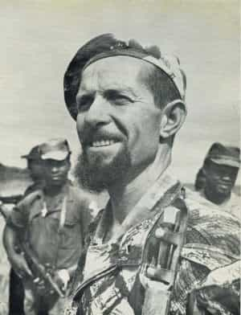
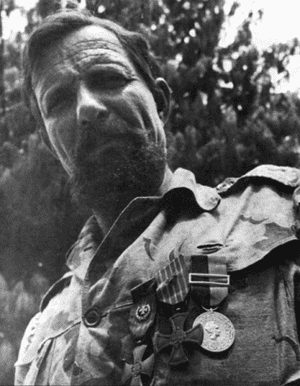

Kiron is a somber European man who devotes most of his time to making money, reading, working out and plotting revenge against the people who turned the world upside down.


People who distinguish themselves in battle are either hailed as heroes or reviled as murderers. Both kinds make frequent appearances on TV, either bedangled with medals or ruthlessly demonized. However, there also exist those who, while undoubtedly heroic, find themselves reduced to footnotes in history books and swept under the rug for a variety of reasons. Today I am going to introduce you to one of them.
Francisco Daniel Roxo was born in 1933 in Mogadouro, Portugal. An adventurous soul since early childhood, at the age of 18 he moved to Portuguese Africa and settled in Niassa province of what would much later become Mozambique. He started off as a railway administrator but got bored with the job very quickly, deciding instead to become a professional hunter.
Roxo took to the African bush like a duck to water. He quickly learned everything there was to know about this immense and untamed land, becoming a talented tracker. Such knowledge came at a cost, however: during one of his camps in the wilderness, he was attacked by a leopard. With both knife and gun out of his reach, he had no choice but to defend himself with bare hands. Despite suffering heavy wounds, he managed to strangle the beast, thus making the first entry in his list of legendary deeds.
Back then, being a professional hunter also involved protecting the land from poachers. Roxo handled the task with extreme prejudice – the only thing a poacher caught by him could expect was a bullet. At first he killed poachers regardless of the tribe or group they belonged to, but in the 1960s, guerrillas from “black nationalist” organizations started ending up on the business end of his rifle more and more often, making him an unwilling participant of the war that was slowly brewing in the region.

Map of Portuguese colonies in the 1960s, also showing two other important actors in the war.
In the aftermath of WWII, European empires started releasing overseas domains from their grasp. Rare exceptions notwithstanding, independence for an African colony meant an immediate and bloody struggle for power among its tribal chieftains and warlords, in which only the most ruthless survived. In a bid to secure a geopolitical foothold, USSR, China and Cuba actively added oil to the fire, supplying warring tribes with arms and military instructors in exchange for allegiance, while turning a blind eye to atrocities they committed. By the 1960s, the only major bastions of peace remaining on the continent were Rhodesia, South Africa and Portuguese colonies of Mozambique, Angola and Guinea.
Unlike most politicians, Roxo knew Africa and its people intimately, and could feel the fear gripping the local population from a mile away. Contrary to what modern historians would have you believe, most colonial natives wanted nothing to do with black “freedom fighters” who resorted to terror, abduction and mass murder at every opportunity in order to gain information and recruits. Roxo hated them all the more for what they were doing to his beloved bush – slaughtering a herd of elephants to “feed the revolution” was business as usual for the terrorists.
War officially came to Mozambique in 1964, and Roxo was among the first to volunteer in a fight against FRELIMO guerillas invading from Tanzania. He was initially tasked with gathering intelligence on their movements; for a man who knew almost everyone in local villages and could track like a bloodhound, this was child’s play. But Roxo’s scouting efforts proved futile – Portuguese command, fattened by years of peaceful life, was extremely slow to react to information he supplied, if it bothered to react at all. Reinforcements sent by Lisbon were worthless, so Roxo eventually lost his patience and applied to the command for a permit to create his own militia. Upon receiving it, he gathered under his leadership Niassa province’s best hunters, most reckless hotshots and even terrorist turncoats – barely a hundred men in total. Thus, Coluna Infernal was born.
Danny Roxo mentoring his troops.
The training Roxo put his ragtag war-band through was utterly merciless. In order to teach them not to flinch at the sound of gunfire, he would unexpectedly shoot at the ground beneath their feet to build up tolerance. He forced them to jog, climb mountains and wade upstream through rivers for hours, all while wearing backpacks filled with heavy boulders. Accidentally making a noise during practice ambushes was punished by a vicious beatdown. As a result, Roxo’s men could move in complete silence, cover huge distances at breakneck speed and still have enough energy to immediately attack the enemy upon arrival.
Roxo firmly believed in fighting fire with fire, and Portuguese generals were initially shocked by brutality of his tactics. However, their efficiency more than made up for it. Prisoners taken by Coluna Infernal only lasted as long as their interrogations, while militia members themselves laughed at the concept of surrender. “If you see anyone taking me prisoner, shoot me,” Roxo would tell his troops.
When not conducting lightning-speed attacks on enemy encampments in the dead of night, members of Coluna Infernal would don rags and stealthily join the victims of FRELIMO mass abductions, only to later slaughter the unsuspecting terrorists in their own camps. Habitually wearing enemy uniforms and intercepting communications, Roxo’s soldiers sowed chaos and confusion among the encroaching FRELIMO bands. The man himself did not miss a single chance to participate—for example, out of 36 enemies eliminated in one of the Infernal Column’s attacks on terrorist camps, 15 were personally killed by Roxo. For his exploits, he was granted Cruz de Guerra, one of the highest Portuguese military awards—very ironic, considering that he was technically a civilian and his soldiers’ kill-count exceeded that of all Portuguese regiments stationed in Mozambique.

By 1972, Danny Roxo had 10 years of fighting terrorists and rescuing hostages under his belt, along with the status of a living legend. FRELIMO commanders put a $100 000 bounty on his head—an astronomical amount of money by contemporary standards; however, nobody even dreamed of trying to collect it. The terrorists would rather be left naked in the bush among hyenas and lions than go after the White Devil of Mozambique, as people called him. Throughout its entire existence, Coluna Infernal sustained only three casualties; each was personally avenged by their leader. Unfortunately, the sheer number of enemy troops pouring into Portuguese Africa from neighboring countries was becoming too much even for Roxo and his daredevils to handle.
The breaking point came in April of 1974, when the Portuguese government was overthrown in a communist coup. The usurpers’ plans involved a complete withdrawal from Africa and ceding power over the colonies to black “revolutionaries”. Realizing that he would soon be under the thumb of the very people he fought against, Roxo took his men and left Mozambique for South Africa, where they volunteered to join the military. However, Roxo decided to punch even higher by applying for enrollment with the Recces—South African Special Forces. At the age of 41, Danny Roxo passed with flying colors the brutal entry trials that broke thousands of energetic 25-year olds, and got assigned to Bravo Group, which specialized in recon and sabotage. For a Portuguese speaker, this meant only one thing: missions in Mozambique and Angola.
By that time, both ex-colonies were on fire. Mozambique became a battlefield between a pro-colonial native resistance and FRELIMO goons who seized power there, while Angola was a massive free-for-all between three armed groups. One of them, named MPLA, was winning due to intense support from Moscow and Havana, which prompted South Africa to extend military assistance to two others in order to prevent the communists from seizing power in Angola as well. Codenamed Operation Savannah, it was to be the largest South African military campaign abroad, and Roxo had the honor of participating in what turned out to be its pivotal battle.
During the course of the operation, decisive advance of two South African battle groups became unexpectedly blocked by the overflowing Nhia River. The only way across was over a narrow bridge. Jan Breytenbach, Roxo’s commander, ordered him to investigate it. Leaving most of his team behind to cover his back, Roxo went to the bridge alone, only to find it destroyed. Little did he know that on his way to the bridge he was spotted by an ambush of eleven. The guerillas expected the rest of the recon team to follow their leader into a kill-zone, but when they saw Roxo going back instead, they decided to capture him alive. This decision cost them dearly: Roxo almost immediately killed the Cuban sneaking up on him, with the ambushers opening fire upon hearing the gunshot. By the time Roxo’s team arrived to the rescue, however, the remaining ten guerillas all lay dead by his hand.
The failed ambush was quickly followed by an enemy attack, during the entirety of which combat engineers worked on repairing the bridge. Eventually they succeeded, allowing the battle groups to advance. The skirmish left from 450 to 800 Cuban-Angolan soldiers and their commander dead, as opposed to only 4 South African casualties. News of a “mercenary butcher” who single-handedly killed eleven men spread among MPLA forces like wildfire, demoralizing them greatly. For his unflinching bravery in the face of danger, Danny Roxo became the first foreigner to be awarded Honoris Crux, the highest South African military award.

Upon returning from Angola, Jan Breytenbach convinced the South African high command to reorganize Bravo Group into a large counter-terrorist force, with Roxo in charge of its instruction and training. This is how 32 Battalion (aka Buffalo Battalion) came into existence, becoming the only Portuguese-speaking arm of the South African military, as well as the only one that admitted non-Whites. 80% black and 20% White. The battalion soon became a haven for all sorts of foreign volunteers, from Germans and Americans to Belgians and Rhodesians. Despite being rowdy and unruly by South African standards, the Buffaloes—utilizing modified Coluna Infernal tactics—proved extremely efficient, eliminating more enemies and sustaining less casualties than any other SADF unit until their disbandment in 1993.
Despite South Africa’s official withdrawal from Angola, their sabotage groups remained behind to continue harassing MPLA. Roxo, of course, could not stay away from the action, personally leading a rescue mission there in August of 1976. Upon arrival, Roxo took sergeants Ribeiro and Sierra with him and separated from his team to blow up a bridge, their second objective. However, as they were nearing the objective, their open-topped truck triggered an anti-tank mine.
The blast was powerful enough to lift the truck off the ground and flip it, bringing it down on the ejected crew. Sierra suffered a grievous head wound, while Roxo got pinned beneath the fallen truck, his spine and legs crushed. The explosion destroyed the radio, so Ribeiro was forced to run to the rest of the team for help. However, the truck proved too heavy even for them to push off the trapped sergeant, while the pilot of a medivac helicopter they summoned refused to land close to the scene due to a Cuban plane patrolling the area.
By the time the medics arrived, Roxo no longer breathed. According to his comrades-in-arms, he did not utter a single word since getting pinned under the truck. Neither did he scream or groan, although the pain must have been unbearable. Eventually Roxo found enough strength to take out a cigarette and light it. Upon finishing it, he died.
Special thanks to Sergey “Tiomkin” Karamaev for providing data and historical context for this article.
Read More: General Robert E. Lee: American Hero Or Slavery Apologist?